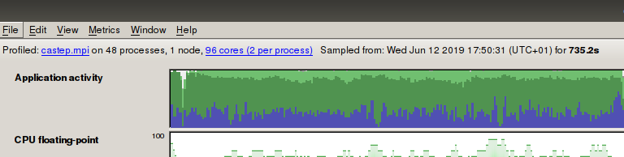

Performance Analysis Tools¶
Various performance analysis tools are installed on the NextgenIO system.
Score-P¶
Score-P provides an infrastructure to use various measurement tools, including Vampir, for parallel applications. The official site for Score-P can be found here, and the documentation is located here.
- Need to include Score-p at compilation time
Vampir¶
Vampir provides an interactive event trace visualiser, allowing the post mortem analysis of parallel application runs. The website for Vampir can be found here, and a tutorial can be accessed here.
Allinea/ARM MAP¶
ARM Map is a source level application profiler, designed to evaluate parallel applications. The official website is located here, and an introduction can be found here.
On NextgenIO ARM Map can be accessed after loading the arm-forge
module:
$> module load arm-forge
When the module is loaded, the easiest use of MAP is through the GUI. This can be opened by entering
$> map
This will open the basic interface (note that this will require X11 forwarding to be enabled when connecting to NextgenIO with SSH - Connecting to the System):
{kind=link}
After selecting ‘profiling’ the menu shown below will load. By selecting the application to be profiled, MAP will auto-detect the type of application (e.g. OpenMP, MPI) the associated menu options will be available. These options can also be set manually. Below is an example for a CASTEP run on the TiN benchmark dataset:
{kind=link}
Alternatively one can simply run MAP from the command line (or
from a batch script) by prepending map to the command to run
the executable and adding the option --profile to disable the
GUI (note that the profile flag needs to be set immediately
following the map command):
map --profile srun --nodes=2 --tasks-per-node=2 /path/to/myexec
The result of a profiling run, started either from the command line or from the GUI, is a .map file. The information contained in this file can be explored using the MAP application as well. To open it from the command line enter:
map [profile-run].map
Here [profile-run] is the name generated by MAP that specifies the run.
Note
MAP can show a line by line usage report of the submitted code
over the course of the job’s runtime. To enable this feature it
is necessary to compile the code using the debug flag -g. For
example:
mpicc mycode.c -fopenmp -o myexec -g
After this compilation MAP can be called as usual upon execution.
MAP profiling example: CASTEP¶
This example will use the application CASTEP to illustrate the usage of MAP for benchmarking.
Job submission can be done either directly, by selecting the application in the GUI and clicking Submit, or by submitting a batch job to the queue (see section see Submitting Jobs) and calling MAP without the GUI.
The following batch script submits a CASTEP job analysing the practice TiN dataset (assumed to be stored in a subdirectory named TiN), calls MAP to profile the performance, and moves the resulting files to the TiN/output subdirectory. The node configuration has been chosen such that the number of tasks matches the number of k-points, which is eight for the TiN dataset. The choice of memory configuration in the example below is arbitrary, but is generally of significant impact on performance.
#!/bin/bash
#SBATCH --nodes=2
#SBATCH --ntasks=8
#SBATCH --cpus-per-task=12
#SBATCH -p 2lm #Request nodes in Memory Mode
#SBATCH
#SBATCH -D /path/to/TiN
#SBATCH -o /path/to/TiN/output/TiN.out.%A.%N.log # %A prints the PID, %N prints the NodeID
#SBATCH -e /path/to/TiN/output/TiN.err.%A.%N.log
#SBATCH --job-name=tin-job
export OMP_NUM_THREADS=$SLURM_CPUS_PER_TASK
export KMP_AFFINITY=compact
DIR="/path/to/castep-dir/"
J="TiN-mp" #Name of the executable (and the associated files in the TiN directory)
map --profile srun "${DIR}/CASTEP-18.1/obj/linux_x86_64_ifort19/castep.mpi" "${DIR}/TiN/$J"
mv "${DIR}test/TiN/${J}.castep" "${DIR}test/TiN/output"
mv "${DIR}test/TiN/${J}.bands" "${DIR}test/TiN/output"
mv "${DIR}test/TiN/${J}.bib" "${DIR}test/TiN/output"
mv "${DIR}test/TiN/${J}.cst_esp" "${DIR}test/TiN/output"
The results of this profiling run (viewed in the MAP GUI) should look like the screen below:
{kind=link}
In the default view of the GUI shown above the upper panel displays a breakdown of resource usage: application activity (fraction of time spent on main thread, OpenMP, MPI etc.), fraction of max FLOPs per CPUs used, and memory usage. The large screen below shows the fraction of the runtime spent on different sections of the application.
By selecting any section of the runtime (in the upper panels) and left clicking in the highlighted region, it is possible to zoom in on a certain time. Right clicking will zoom out again.
Note
As hyperthreading is switched on by default on the NextgenIO system, MAP will intially display the results of the run under the assumption that each pysical core represents two logical cores, even when hyperthreading was switched off manually. To adjust this setting, adjust the number of cores in the top right corner of the GUI.
In the example in the image below all cores on a node were selected, resulting in the assumption of 96 cores (2 per process). Select this setting to adjust the number of cores per process to 1, if hyperthreading was switched off.
{kind=link}
There are many display options and varying levels of detail to review this data, and requirements will depends strongly one the intention of the user. We refer the reader to the MAP documentation for a discussion of these options.
When using CASTEP as a benchmark application for the NextgenIO system there are various options to consider, most importantly the platform memory mode, the parallel configuration, and whether there is a difference between using mpirun and srun.